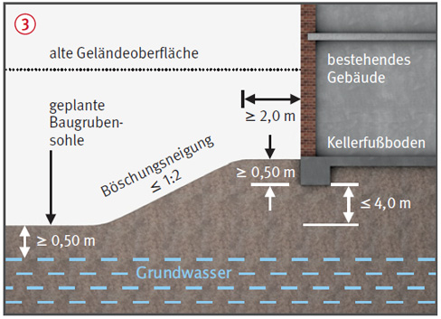
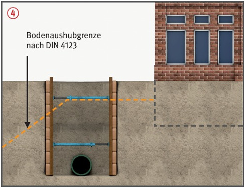

Nicht fachgerecht geplante
und ausgeführte Ausschachtungsarbeiten
im Einflussbereich bestehender Gebäude
können die Standsicherheit des
Gebäudes und der Baugrube/
des Grabens beeinträchtigen.
Hierdurch können Beschäftigte
und Anwohner gefährdet
werden.
Allgemeines
Standsicherheit des Gebäudes/
von Gebäudeteilen ist abhängig
von Setzungen im Bereich der
Fundamente.
Setzungen können hervorgerufen werden durch:
nicht fachgerechte Böschungen
(zu steil/zu dicht),
verbaubedingte Bodenbewegungen .
Schutzmaßnahmen
Voraussetzungen (Gebäude, Boden und Grundwasser)
Gründung auf Streifenfundamenten
oder biegesteifer Stahlbetonplatte.
Vertikale Fundamentlast ≤ 250
kN/m (i.d. R. 5 Vollgeschosse).
Vorhandene Nutzlast auf
Kellerfußböden hinter dem
Streifenfundament ≤ 3,5 kN/m2.
Einhaltung der zulässigen
Bodenpressungen nach DIN
1054 bzw. Nachweis der Grundbruchsicherheit
nach DIN 4017.
In den Baugrund werden überwiegend
lotrechte Lasten eingeleitet.
Es wirken keine maßgebenden
horizontalen Kräfte, z. B. aus
Gewölbewirkung .
Grundwasserspiegel während
der Bauausführung mindestens
0,50 m unterhalb neuer Gründungsebene.
Mindestens mitteldicht gelagerter nichtbindiger oder mindestens steifer bindiger Boden.
Zusätzliche Hinweise zu Planung und Bauvorbereitung
Örtliche Gegebenheiten, Baugrund,
vorhandene Fundamentunterkanten,
Standsicherheit
des Gebäudes, im Baugrund
wirkende Kräfte (z. B. waagerechte
Krafteinleitung aus Gewölbe- oder Rahmenwirkung)
erkunden und prüfen.
Beweissicherung, z. B. Dokumentation
bereits vorhandener Risse.
Zusammenstellung der erforderlichen Informationen in
bautechnischen Unterlagen,
z. B. in Plänen.
Zusätzliche Hinweise zur Bauleitung
Bauleiter oder fachkundiger
Vertreter muss für die ordnungsgemäße
Ausführung der Arbeiten
sorgen und während der Arbeiten
auf der Baustelle anwesend sein.
Zur Kontrolle Setzungs- und
ggf. Verschiebungsmessungen
während der Bauphase durchführen
und dokumentieren.
Beobachtung von Rissen,
z. B. durch Gipsmarken.
Arbeitstägliche Dokumentation
des Baufortschrittes.
Zusätzliche Hinweise zu Bodenaushubgrenze
Gebäude nicht bis zu seiner
Fundamentunterkante oder tiefer freischachten.
Standsicherheit der bestehenden
Fundamente durch Einhaltung
der Bodenaushubgrenze
gem. DIN 4123 sicherstellen .

Maßnahmen bei Nichteinhalten der Bodenaushubgrenze
Verformungsarme Verbauweisen wählen.
Verbau statisch nachweisen.
Verformungsnachweis für
Verbau führen.
Auswirkungen von möglichen
Setzungen auf das Gebäude
prüfen/nachweisen .
Ggf. Sicherungsmaßnahmen
erforderlich.

Zusätzliche Hinweise
zu Sicherungsmaßnahmen
an bestehenden Gebäuden
Instandsetzen von Mauerwerk
oder Beton.
Rückverankern oder Abstützen
gefährdeter Gebäudeteile.
Versteifen von Wänden,
z. B. durch Ausmauern von
Öffnungen.
Verbesserung des Verbundes
zwischen Außen- und Querwänden.
 .
.